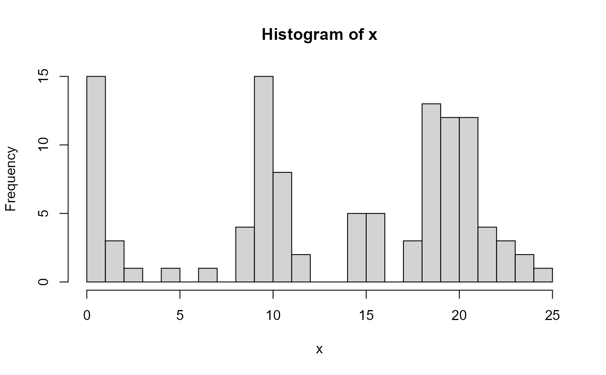

zd_main_components.RdExtract np-1 main components and an additional first potentially exponentially distributed component from a data frame of distribution parameters with columns mean, sd, L.
zd_main_components(p, np = 3, near_zero = 3)
| p | data frame of distribution parameters (mean, sd, L) returned by
|
|---|---|
| np | number of desired components |
| near_zero | heuristic upper boundary of the interval that is considered as close to zero |
The algorithm is pecifically intended to zone diameter (ZD) distributions where the leftmost (resistant) subpopulation is considered exponentially distributed, while the others (intermediate, wild-type) are considered approximately normal.
set.seed(123) x <- c(rexp(20, rate=1), rnorm(30, 10, 1), rnorm(10,15,.2), rnorm(50, 20, 2)) hist(x, breaks=20)#> mean sd L type #> 1 0.8086896 1.389070 0.1817581 e #> 2 9.7402168 1.324847 0.2727121 n #> 4 19.9379323 1.869430 0.4564011 n